How to put the 3D-printed outdoor kit together: wind kit, rain gauge, Stevenson screen,
core box, solar bracket and sky pod, then the lot onto a 2020 mast. Every picture is drawn from the
parametric model and every number comes from params.py; all lengths are millimetres.
Parts at a glance
Every printed part and each kind of hardware, drawn on its own and named. Lay the kit out and tick it off
against these before you start.
Printed parts
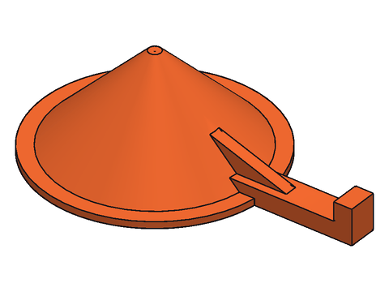
cup_arm×3
accent ASA
cup_hub×1
accent ASA
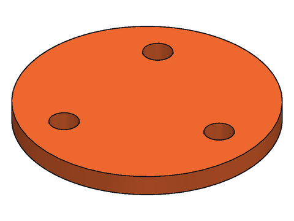
cup_hub_cap×1
accent ASA
enclosure_body×1
white ASA
enclosure_lid×1
white ASA
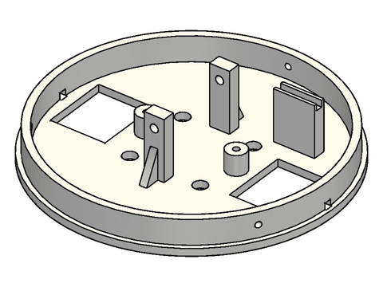
rain_base×1
white ASA
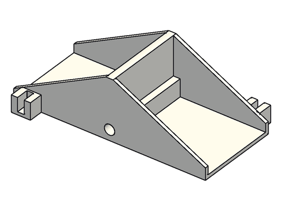
rain_bucket×1
white ASA
rain_funnel×1
white ASA
rain_mesh×1
white ASA
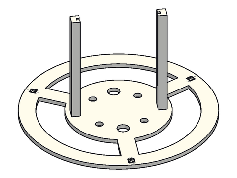
screen_base×1
white ASA
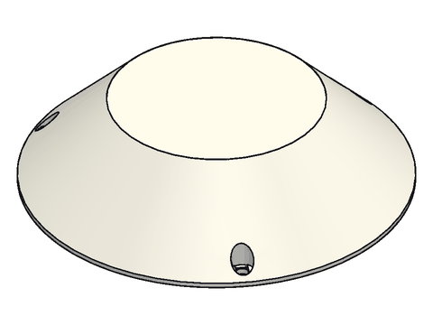
screen_cap×1
white ASA
screen_plate×5
white ASA
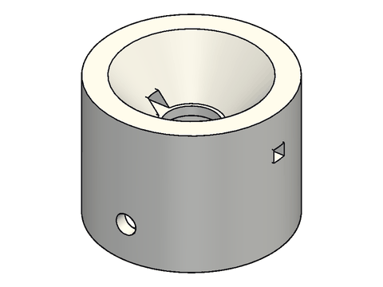
sky_head×1
white ASA
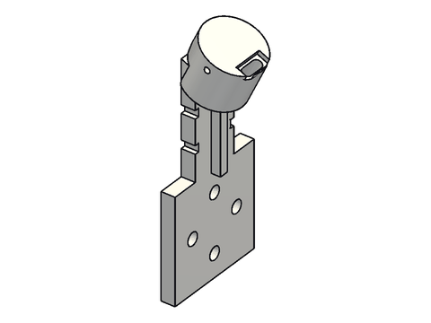
sky_mount×1
white ASA
solar_bracket×1
white ASA
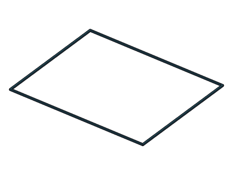
tpu_box_lid_gasket×1
TPU
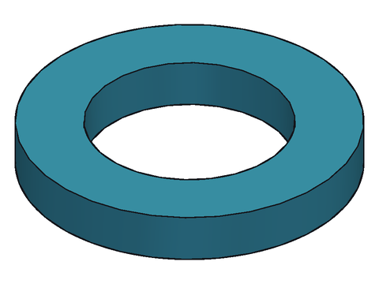
tpu_sky_can_seal×1
TPU
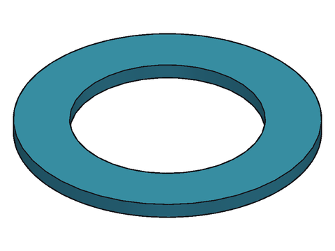
tpu_washer_gland×1
TPU
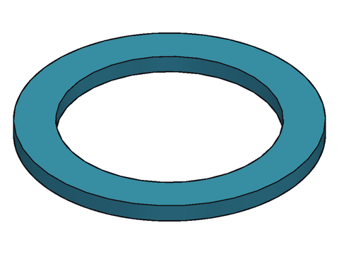
tpu_washer_gx12×3
TPU
tpu_washer_gx16×2
TPU
tpu_wind_lid_gasket×1
TPU
vane_rotor×1
accent ASA
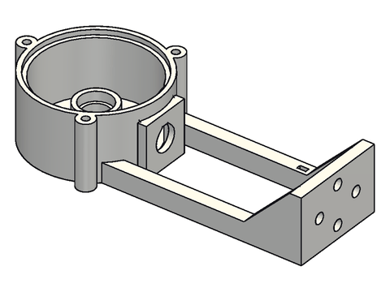
wind_body×1
white ASA
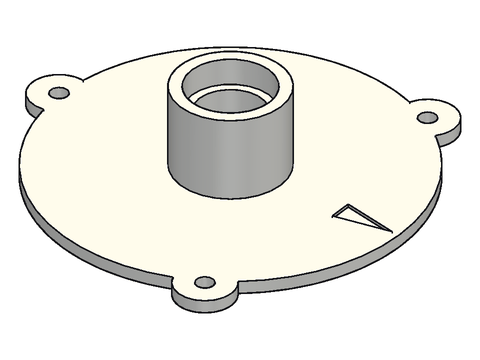
wind_lid×1
white ASA
wind_pcb_ring×1
white ASA
wind_shim×2
white ASA
wind_spacer×2
white ASA
Bought-in hardware
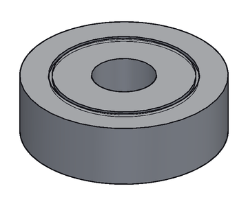
Ball bearing 5 x 16 x 5
wind kit, four
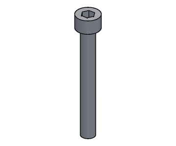
M5 x 40 socket head
rotor shafts, two
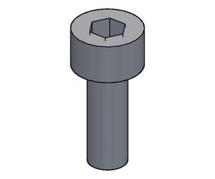
M3 socket head
6, 8, 10, 16, 50 mm long
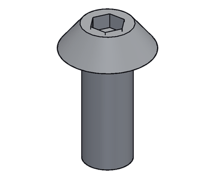
M5 button head
8, 10, 12 mm: mounting
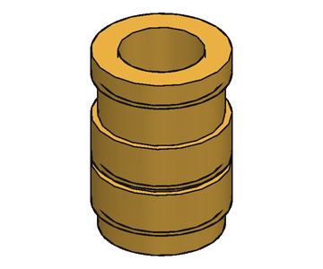
M3 heat-set insert
brass, 4.2 across
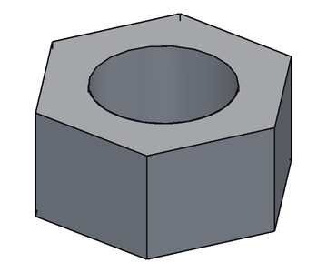
Hex nut
M5 in the hubs and ballast; also M4, M3
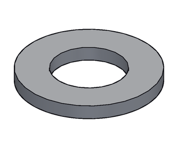
M5 washer
under every mounting screw
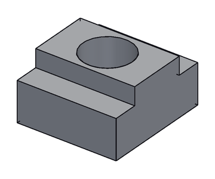
Profile nut
in the 2020 slot
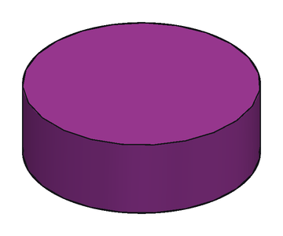
Disc magnet
6 x 2 wind, 4 x 2 rain
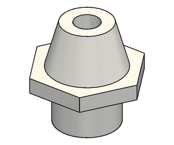
PG7 cable gland
wind housing
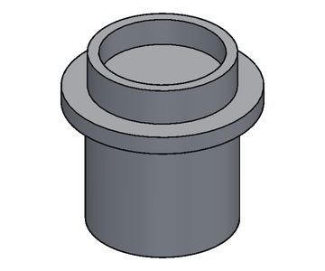
GX12 / GX16 socket
box bottom wall, five
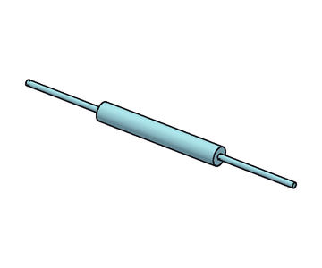
Reed switch
anemometer and rain
Before you start
Read each step's picture first. Parts added in that step are drawn in full colour with numbered balloons;
parts already fitted are drawn pale. Dashed lines show which way a part goes in.
Hex keys: 2.5 mm (M3 socket heads), 3 mm (M4 socket heads and M5 button heads), 4 mm (the M5 rotor shafts).
Spanners: 5.5 mm (M3 nyloc), 7 mm (M4), 8 mm (M5), and whatever fits your gland and GX socket nuts.
A soldering iron with a heat-set insert tip, or a plain tip you do not mind dedicating to it.
Epoxy or CA glue for the magnets, silicone, a spirit level, a multimeter for checking reed switches, and a measuring syringe or jug for the rain calibration.
Heat-set inserts
There are 14 of them (M3 x 6, 4.2 mm across). Each pilot hole is Ø3.8, at least
6 mm deep. Set the insert on the hole, press it straight down with the hot iron until its top is flush,
lift the iron straight off and hold the part still for a few seconds. Print a test coupon first: a different insert
needs m3_insert_d and m3_insert_l changed.
Self-tapping screws
Screws that go into plain Ø2.5 pilot holes (cup hub cap, rain stops and funnel, sky pod head) cut
their own thread. Drive them slowly, stop when the part is tight, and do not take them in and out more than you have to.
Mounting screws
Every foot and tab takes M5 button heads with a washer (about 1 mm) into M5 profile nuts in the 2020's slot.
Each foot has four holes in a cross: use the two that land on the slot.
1. Wind housing
The housing carries both wind sensors: the cups hang from bearings in its floor and the vane turns on its lid. Build the bottom half here. The README says to print wind_lid first and check that a bearing fits its pocket before printing the body.
1.1
Heat-set inserts in the housing ears
Printed
wind_body×1
Hardware
M3 x 6 brass heat-set insert, OD 4.2×3
Press one insert into each of the three ears on the housing rim, from the top, with a soldering iron and an insert tip. Keep it square and stop when its top face is flush with the rim.
Let each one cool before the next. The lid screws pull on these.
Insert pilot
Ø3.8, 7 mm deep
Insert length
6 mm, so 1 mm of hole is left under it
Ears
radius 35.6 mm, at 60, 180, 300°
1.2
Bearings and spacer in the floor tower
1bearing2wind_spacer
Printed
wind_spacer×1
Hardware
Ball bearing 5 x 16 x 5, shielded (625ZZ)×2
Press the first bearing into the pocket that opens under the floor, until its outer race stops on the shoulder inside the tower.
Drop a wind_spacer into the tower from above. It stands on the lower bearing's inner race.
Press the second bearing in from above, again down to the shoulder.
Push on the outer race only: a socket the size of the race works. Pressing on the inner race or the shields damages the bearing.
Both should spin freely. If a pocket is too loose or too tight, change brg_fit in params.py and reprint; this is why the README says to print wind_lid first and check the fit.
Bearing pocket
Ø16.1 for a 16 mm bearing (0.1 mm over), 5 mm deep
Shoulder between the pockets
Ø12.92 mm
Bearing faces apart
8 mm
Spacer
Ø7.6 outside, Ø5.3 bore, 8.3 mm long
1.3
Anemometer reed switch
1reed switch
Hardware
Reed switch, 14 mm glass×1
Solder two wires to the reed switch. Bend its leads well away from the glass, never at the seal.
Lay it in the channel on the housing floor, on the side away from the arm, between the two cradles, with the glass centred 18.7 mm from the axis and the leads toward the wall.
Hold it down with a dab of neutral-cure silicone on the leads, not on the glass.
Lead the wires up the wall to where the vane PCB (Board D) will sit: they go to its anemometer reed pads, SW9 in hardware/boards/board-d-wind.md.
Reed centre from the axis
18.7 mm
Channel
2.7 mm wide, open on top, its floor 0.4 mm above the housing floor
Magnet to reed, through the floor
7.6 mm centre to centre
1.4
Cable gland
1PG7 gland2tpu_washer_gland3gland locknut
Printed
tpu_washer_gland×1
Hardware
PG7 cable gland×1
The gland goes in the wall that faces the mast, between the arm's two rails.
From outside: the TPU washer, then the gland through the wall. From inside: its locknut, flat against the seat cut into the wall.
Feed the 5-core cable in now and leave the dome nut loose. Tighten it after the lid is on (step 4.2).
Hole
Ø12.5, centre 14 mm above the housing's underside
TPU washer
Ø20 outside, Ø12.7 hole, 1 mm thick
Wall under the flange
3 mm (a flat seat inside takes the locknut); 4 mm with the washer
Thread left for the locknut
4 mm of a 8 mm PG7 thread (Flyrobo lists 9)
2. Anemometer
Three cups on a hub, clamped to an M5 x 40 screw that turns in the floor tower's bearings.
2.1
Magnet and nut into the hub
Printed
cup_hub×1
Hardware
Disc magnet 6 x 2×1
M5 hex nut×1
Two-part epoxy (for the magnets)×1
The hub's top is the face with the small raised lip round the bore.
Push a 6 x 2 magnet into the slot in that face, standing on its edge, flat faces toward and away from the axis. Either pole outward works: a reed closes for both.
Fix the magnet with a drop of epoxy: its slot is a clearance fit.
Slide an M5 nut into the slot in the hub's side until it sits over the bore. Its flats run along the slot walls.
Magnet slot
6.2 across, 2.2 along the radius, 6.3 deep, at radius 18.7 mm
Nut slot
8.3 wide, 4.4 tall, its top 3.5 mm below the hub's top face
2.2
Arms and cap (seen from below)
1cup_arm2cup_hub_cap3M3 x 10
Printed
cup_arm×3
cup_hub_cap×1
Hardware
M3 x 10 socket head×3
Turn the hub over. Push each cup_arm straight up into a slot from the hub's underside. The hook on the arm's inner end only goes in one way round and only from below; it will not slide in from the side.
All three cups then face the same way round.
Lay cup_hub_cap over the slots and drive three M3 x 10 through it into the pilot holes. They cut their own thread: go slowly and stop when the cap is tight.
Pilot holes
Ø2.5, 9 mm deep, at radius 10 mm
Thread in the hub
7.6 mm (10 mm screw, 2.4 mm cap)
Cups sweep
radius 82 mm
2.3
Hang the rotor from the housing
1wind_shim2M5 x 40 shaft3cup rotor (2.2)
Printed
wind_shim×1
Hardware
M5 x 40 socket head (rotor shaft)×1
Put a wind_shim on an M5 x 40 and drop the screw into the floor tower from inside the housing. The shim sits on the upper bearing's inner race.
From below, push the cup rotor onto the screw, lip first, until the lip meets the lower bearing's inner race.
Hold the rotor and turn the screw from inside with a 4 mm hex key until it catches the nut and pulls the stack together. Stop at snug: shim, both inner races, spacer and hub lip clamped into one piece.
Spin it. It should coast to a stop, not stop dead. The README says to de-grease the cup bearings and use light oil, for a lower starting speed.
Shim
Ø7.6, Ø5.3 bore, 1.2 mm thick
Screw past the bearing stack
20.5 mm, into a 22 mm bore through the nut
Cup tops below the housing floor
4 mm
3. Wind vane
The vane turns on two more bearings in the lid, on a second M5 x 40 put in from under the lid. The lid and vane come off the housing together: the screw head is the one fastener that passes the vane PCB's centre hole.
3.1
Bearings and spacer in the lid
Printed
wind_lid×1
wind_spacer×1
Hardware
Ball bearing 5 x 16 x 5, shielded (625ZZ)×2
The same as step 1.2: one bearing into the pocket that opens under the lid, the spacer, then the second bearing into the top of the tower. Outer races only, each pushed to the shoulder.
The arrow engraved on the lid's top points along the arm, at the mast. With the mast turned as in step 10.5 (wind arm on the south face) that is north.
Pockets and spacer
as step 1.2
3.2
Prepare the vane rotor (seen from below)
1vane_rotor2magnet 6 x 23M5 nut (hub)4M5 x 25 ballast screw5M5 nuts (ballast)
Printed
vane_rotor×1
Hardware
Disc magnet 6 x 2×1
M5 hex nut×5
M5 x 25 socket head (vane ballast)×1
Push a 6 x 2 magnet into the slot under the flange on the tail side, standing on edge, flat faces along the radius, as in the cup hub.
Fix the magnet with a drop of epoxy.
Slide an M5 nut into the slot in the side of the hub, flats along the slot walls, until it sits over the bore.
Put the M5 x 25 down through the slot in the nose, head on top of the spine, and run M5 nuts onto it under the spine. Leave them loose: they are set in step 3.4.
Magnet
radius 16.6 mm, under the tail side
Ballast slot
Ø5.5, centres 12 mm apart, centre 61 mm from the axis
Room for ballast nuts
17 mm of screw under the 8 mm spine: 4 nuts
3.3
Vane onto the lid
1vane_rotor (3.2)2wind_shim3M5 x 40 shaft
Printed
wind_shim×1
Hardware
M5 x 40 socket head (rotor shaft)×1
Put a wind_shim on the second M5 x 40 and push it up through the lid's tower from underneath.
Set the vane over the tower so its lip meets the upper bearing's inner race.
Hold the vane and turn the screw from under the lid with a 4 mm hex key until it is snug in the hub nut.
The vane must turn freely without touching the lid.
Screw head below the lid's underside
6.2 mm (shim 1.2 + head 5)
Screw into the vane hub
20.5 mm
Running gap, vane to lid
0.8 mm
Fin above the lid
3 mm
3.4
Balance the vane
1wind_lid2vane_rotor3ballast screw and nuts
Nothing new
Hold the lid with the shaft horizontal, as drawn. A balanced vane stays at whatever angle you leave it; an unbalanced one swings round until its heavy end is down.
Add or take off nuts on the ballast screw, or slide it along its slot, until the vane stays put. Then lock the nuts against the spine.
Model's estimate
about 15 g at the slot, for a solid print (rotor 40 g solid, centre of gravity 22.7 mm toward the tail)
What fits
the M5 x 25 and 4 nuts
The 15 g estimate is for solid plastic. A rotor printed at 15 to 20 % infill is lighter, so expect to need less. If 4 nuts are not enough, an M5 x 30 hangs clear of the lid (the slot is outside the lid's 35.1 mm radius).
4. Closing the wind kit
The vane PCB, its ring, the gasket and the lid with the vane on it.
4.1
Vane PCB and its ring
Printed
wind_pcb_ring×1
Hardware
Wind-vane PCB, 60.71 mm disc×1
Solder the floor reed's two wires to the PCB's anemometer reed pads (SW9), and the 5-core cable to its J1 pads: 1 VBAT, 2 GND, 3 vane analog, 4 anemometer pulse, 5 shield (hardware/boards/board-d-wind.md). The same numbers go on the GX16-5 plug at the box end.
Lay the PCB in the pocket at the top of the housing so its rim rests on the ledge, then lay wind_pcb_ring on top of it.
Either face can go up: the reeds lie in slots through the board, level with its middle, and the room above it is for solder joints.
Turn the PCB so its N reed points along the arm, toward the mast, where the lid's arrow will point. Nothing keys the angle, so mark the N reed on the PCB and the housing rim.
PCB
Ø60.71 in a Ø61.31 pocket; the ledge carries 1.8 mm of its rim
Pocket depth
2.6 mm
Ring
Ø60.9 outside, Ø57.5 inside, 1.7 mm thick; it stops 0.1 mm short of the lid, so the lid clamps the gasket, not the PCB
Room above the PCB
1.8 mm, for solder joints
4.2
Gasket and lid
1tpu_wind_lid_gasket2wind_lid with vane (3.3)3M3 x 8
Printed
tpu_wind_lid_gasket×1
Hardware
M3 x 8 socket head×3
Lay the TPU gasket on the rim, its three ear holes over the inserts.
Lower the lid and vane onto it. The vane screw's head goes down through the PCB's centre hole.
Drive three M3 x 8 through the lid's ears into the inserts. Turn the vane to get the spine out of the way of the hex key. Tighten evenly, snug.
Tighten the gland's dome nut on the cable.
Check with a meter on the cable: the anemometer reed closes once per turn of the cups, and each vane reed closes as the magnet passes over it.
M3 x 8 thread into the insert
4.8 mm (through 2.4 lid and 0.8 gasket)
Vane screw head through the PCB hole
Ø8.5 through Ø9.15 mm
Vane magnet to the reeds
8.8 mm centre to centre
Magnet strength (README, bench item 1): if three vane positions close at once, raise pcb_standoff or use a smaller magnet; if none close between sectors, set vane_mag_n = 2.
5. Rain gauge
A tipping bucket under a 110 mm funnel.
5.1
Stop screws and reed
Printed
rain_base×1
Hardware
M3 x 16 socket head (bucket stops)×2
Reed switch, 14 mm glass×1
Drive an M3 x 16 into each of the two round bosses either side of the uprights. They cut their own thread. Leave the heads down on the bosses for now; the heads are the bucket's stops and are set in step 5.5.
Lay the reed switch in the channel on top of the post beside the uprights, glass along the bucket's length, and hold it with neutral-cure silicone on the leads. Its wires leave through the drain opening beside the post: GX12-3 pin 1 pulse, pin 2 GND, pin 3 the cable's shield (hardware/boards/board-a-core.md).
Stop pilots
Ø2.5, through the 8 mm boss and the 3 mm base
Stops from the pivot
18 mm
Stop head top above its boss
3 mm nominal (an M3 head seated)
Reed
26 mm along the bucket from the pivot, 22.7 mm off the centre line; channel 2.7 wide, 2.6 mm deep
Stop screw tips
5 mm out under the base with the heads seated, passing 1.2 mm beside the 2020 once the base is turned 45° on it
5.2
Bolt the base to the crossarm
12020 crossarm2M5 x 8 button head3M5 washer4profile nut
Hardware
M5 x 8 button head×2
M5 washer×2
M5 profile nut for 2020×2
Do this before the bucket goes in: two of the foot screws sit under the bucket's edge.
Set the base on the crossarm's top face turned 45°, so the two drain openings under the bucket's ends lie off the profile. Two of the four M5 holes then sit over the slot.
Profile nuts into the slot, then two M5 x 8 with washers. Snug.
Check the crossarm is level along and across: the bucket tips by weight.
Foot holes
Ø5.5 at radius 20 mm on the 45° diagonals
Thread past the washer and base
4 mm
As drawn
gauge centre 62 mm in from the crossarm's end
5.3
Bucket, magnets and axle
1rain_bucket2magnet 4 x 23M3 x 50 axle
Printed
rain_bucket×1
Hardware
Disc magnet 4 x 2×2
M3 x 50 socket head (bucket axle)×1
M3 nyloc nut×1
Drop a 4 x 2 magnet into the slot in each of the bucket's two corner bosses, on edge, flat faces toward the bucket's ends, and fix each with a drop of epoxy. One passes the reed; the other balances it. The bucket works either way round.
Set the bucket between the uprights and push the M3 x 50 through the first upright, the bucket and the second upright.
Nyloc nut on the end, only far enough to stay on: the uprights must not squeeze the bucket.
Tip the bucket by hand. It should fall onto either stop by itself.
Axle holes
Ø3.3 in the uprights, Ø3.5 in the bucket
Gap each side of the bucket
1 mm
Pivot above the base's underside
22.3 mm
Rest angle
16° either way
5.4
Funnel
1rain_funnel2rain_mesh3M3 x 6
Printed
rain_funnel×1
rain_mesh×1
Hardware
M3 x 6 socket head×3
Lower the funnel over the base so its skirt slides down over the base's ring, and turn it until its three side holes line up with the pilot holes in the ring.
Drive three M3 x 6 through the skirt into the ring. They cut their own thread; snug.
Drop rain_mesh into the funnel. It rests on the cone above the nozzle and keeps insects and leaves out; lift it out to clean it.
Collector
Ø110 mm inside at the knife edge: 95 cm², so 1 mm of rain is 9.5 ml
Ring under the skirt
10 mm tall
Screws
at 90, 210 and 330°; 4.4 mm of thread into the ring
Mesh
Ø40, 1.6 thick, 2.5 mm square holes; rests 17.5 mm above the nozzle's top
Pour a known volume of water slowly into the funnel and count the tips. Volume per tip = volume / tips; mm of rain per tip = ml per tip / 9.5.
The stop screws set the tip volume. Turn both by the same amount and measure again.
Use the measured mm per tip downstream; it will differ from the SparkFun bucket's.
Magnet to reed
6 mm as it passes, 9.3 mm at rest
Rest angle
16°
Nozzle
Ø5 mm
6. Stevenson screen
5 louvres and a cap on a spoked base, clamped by three M4 x 80 screws. Board B slides into rails on the base; the lightning module hangs under the cap.
6.1
M4 nuts into the base (seen from below)
Printed
screen_base×1
Hardware
M4 hex nut×3
Push an M4 nut into each of the three hex pockets under the base, at the post positions. A strip of tape holds them until the screws catch in step 6.6.
Pockets
7.2 across flats, 2 mm deep; the 3.2 nut stands 1.2 mm proud underneath
Posts
radius 63.2 mm, at 75, 195, 315°; none sits over a 2020 under the base, whichever pair of foot holes you use
6.2
Bolt the base to the crossarm
12020 crossarm2M5 x 8 button head3M5 washer4profile nut
Hardware
M5 x 8 button head×2
M5 washer×2
M5 profile nut for 2020×2
Set the base on the crossarm with two of its four M5 holes over the slot. Either pair works; the cable hole and the floor vent stay off the profile both ways.
Profile nuts into the slot, two M5 x 8 with washers. Snug.
Foot holes
Ø5.5 on the axes at radius 22 mm
Thread past the washer and base
4 mm
As drawn
screen centre 66 mm in from the crossarm's other end
6.3
Board B on its rails
1Board B2PMS7003
Hardware
Board B (sensor carrier, 58 x 70)×1
PMS7003 particle sensor×1
Plug the 8-core cable into J1, which faces down out of the board's bottom edge, and feed the cable down through the hole in the base.
Slide the board down into the grooves of the two rails, sensors (front) toward the cable hole and the PMS7003 (back) toward the floor vent.
It comes to rest on its two bottom corners; nothing else holds it, so its hole pattern does not matter.
Board
58 x 70 x 1.6 mm
Grooves
1.9 wide, 2 mm deep each side
Board's bottom edge above the base
18 mm, room for the J1 plug and the cable's bend
Cable hole and vent
Ø9 each, 23 mm from the centre
PMS7003 gap to the board
4.3 mm on J3, foam tape in the gap
6.4
Louvres
1screen_plate
Printed
screen_plate×5
Stack the 5 plates over the board, rims down, each plate's three posts on the posts of the one below, holes over the nuts.
Pitch
14 mm
Louvre
45°, 1.2 thick, Ø138 outside, Ø76 mm opening
6.5
Lightning module under the cap (seen from below)
1screen_cap2M3 heat-set insert3lightning module4M3 x 6
Printed
screen_cap×1
Hardware
M3 x 6 brass heat-set insert, OD 4.2×2
M3 x 6 socket head×2
DFRobot SEN0290 lightning module×1
Press two inserts into the bosses under the cap, from the boss tips.
Screw the module to them parts side down (its bare back against the bosses), connector end over the rib, with two M3 x 6.
Plug its Gravity cable in now; the other end goes to J2 on Board B in the next step.
Insert pilots
Ø3.8, 6.5 mm deep
Holes
15 mm apart, 7.5 mm from the coil end
M3 x 6 thread into the insert
5 mm (through the 1 mm board)
6.6
Cap and clamp screws
1screen_cap (6.5)2M4 x 80
Hardware
M4 x 80 socket head (screen clamp)×3
Hold the cap above the stack, plug the lightning module's cable into J2, then lower the cap onto the top plate's posts.
Drop an M4 x 80 down through each post into its nut and tighten them in turn until the stack stops rattling. The plates are 1.2 mm thick: snug is enough.
Screw needed
77.2 mm from the head's seat to the far face of the nut
Left under the nut
2.8 mm of an M4 x 80
Screen
106 mm tall, Ø138 mm
7. Core box
Board A and a loose cell in a sealed box; every cable comes in through the bottom wall. Work with the box lying on its back.
7.1
Heat-set inserts
Printed
enclosure_body×1
Hardware
M3 x 6 brass heat-set insert, OD 4.2×9
Six inserts into the ears round the rim, from the top, flush.
Three into the board standoffs on the back wall, flush with their tops.
Each socket goes in from outside with a TPU washer under its flange; its nut goes on inside.
Left to right, seen from the front (the lid side): ENV (GX16-8), SOLAR (GX12-2), RAIN (GX12-3), WIND (GX16-5), SKY (GX12-4). Each name is engraved on the lid above its socket.
Tighten each nut until its washer just squeezes.
Pins (hardware/boards/board-a-core.md and the README): SOLAR 1 panel +, 2 panel −. RAIN 1 pulse, 2 GND, 3 shield. WIND 1 VBAT, 2 GND, 3 vane analog, 4 anemometer pulse, 5 shield. SKY 1 VBAT, 2 GND, 3 SDA, 4 SCL to Board A's Qwiic port. ENV pin n = Board B J1 pin n, split inside to Board A J4 (XH-5, pins 1 to 5) and J5 (XH-4, pins 6, 2, 7, 8).
Holes
Ø16.2 for GX16, Ø12.2 mm for GX12
Centres from the inside of the left wall
ENV 19.8, SOLAR 47.6, RAIN 72.9, WIND 100.7, SKY 128.5 mm
Wall plus washer
3.2 + 1 = 4.2 mm
Each socket's nut gets full thread past 4.2 mm of wall and washer.
7.3
Board A and the antenna
1Board A2antenna3M3 x 8
Hardware
Board A×1
M3 x 8 socket head×3
868 MHz right-angle stubby antenna, SMA×1
Connect the socket pigtails to Board A first if they are easier to reach with the board out.
Set Board A on the three standoffs, its connector row toward the sockets, and fix it with three M3 x 8. The fourth corner, under the radio, has no hole and rests on a ledge.
Screw the right-angle stubby onto the radio's SMA so the whip points up and lies in its saddle.
Standoffs
5 mm tall
M3 x 8 thread into the insert
6.4 mm (through the 1.6 mm board)
Whip
34 mm from the cell, 64 mm from the mast
The antenna's sizes (ant_elbow, ant_d, ant_len) are estimates from a photo; measure yours and rebuild (README, bench item 6).
Check nothing on Board A's underside sits on the 2 mm ledge under the radio corner (README, bench item 4).
7.4
The cell
1cell
Hardware
32700 cell×1
3 mm closed-cell foam, 40 x 12 mm×1
Silica gel sachet×1
Lay the cell in its cradle above the board, between the two end stops.
Stick the 3 mm closed-cell foam on the pad inside the lid; it presses on the cell when the lid closes.
Put a silica gel sachet in the box.
Cradle
Ø32.5 x 71 mm cell, 6 mm free at each end for tabs and wires
Lid pad
40 x 12 mm
Defaults fit a 32700. For a 32650 set batt_l = 66 and rebuild.
7.5
Gasket and lid
1tpu_box_lid_gasket2enclosure_lid3M3 x 8
Printed
tpu_box_lid_gasket×1
enclosure_lid×1
Hardware
M3 x 8 socket head×6
Press the TPU gasket into the groove round the rim, all the way down, without twists.
Put the lid on with its lettering outside, each name over its socket.
Six M3 x 8 into the rim inserts. Tighten in a cross pattern, a little at a time, until the lid is down all round; snug.
The box is sealed. If condensation shows up, the README's fix is a membrane vent plug (M12 x 1.5, in BOM.md) drilled through the bottom wall.
Groove
1.6 wide, 1.8 mm deep
Gasket
1.4 mm tall as printed; the lid's ridge (0.8 wide, 0.7 mm tall) presses 0.3 mm into it
M3 x 8 thread into the insert
5 mm (through the 3 mm lid)
The 0.3 mm squeeze is a guess (README, bench item 7): if the lid bows between screws, lower gasket_squeeze.
8. Solar bracket
A tilted tray for a panel up to 100 x 70 mm, mounted on the mast above the box.
8.1
Panel into the tray
Printed
solar_bracket×1
Hardware
Solar panel, up to 100 x 70 mm×1
Feed the panel's lead through the hole in the tray floor.
Lay the panel in the tray, between the side rims and the two low lips at the ends.
Run a bead of neutral-cure silicone along both side rims to hold it; the rims and lips only locate it.
Tray inside
100.6 x 70.6, for a panel up to 100 x 70 x 3 mm
Tilt
20° from horizontal
Cable hole
Ø16 mm, middle of the tray
9. Sky pod
An MLX90614 looking at the sky from above the mast top.
9.1
Sensor, seal and head
Printed
sky_mount×1
tpu_sky_can_seal×1
sky_head×1
Hardware
MLX90614 breakout (GY-906)×1
M3 x 8 socket head×2
Neutral-cure silicone×1
Solder four wires to the breakout's header and drop them down the slot through the plug; they come out under the head.
Lay the breakout on the plug's top face, can up, header end over the slot.
Slip the TPU seal over the can.
Slide the head down over the plug until the can comes up through the hole in its floor. Either way round fits: the drains run both ways.
Two M3 x 8 through the head's sides into the plug. They cut their own thread; snug.
Seal the cable exit under the pod with neutral-cure silicone.
Can
Ø8.2 through a Ø8.6 mm hole
Seal
Ø13.2 x Ø8, 1.9 thick, squeezed to 1.6 mm
Can above the cone floor
1 mm
View
±40° cone, axis leaning 25° away from the mast
README bench item 8: read the letters on the can (this pod assumes BAA: 3 V, 90° view); the breakout sizes in params.py are typical, not measured; and the sensor's 1 to 2 mA needs sleeping or gating.
9.2
Check the fit (section)
1sky_mount2MLX90614 can3tpu_sky_can_seal4sky_head
Nothing new
Opening above the mast top
65 mm
Lowest rim above the top of the vane
7 mm
Vane tail to the pod
10 mm
10. Onto the mast
Everything onto a vertical 2020 mast and a crossarm.
10.1
Crossarm onto the mast
Hardware
2020 right-angle connector×2
M5 x 10 button head×4
M5 profile nut for 2020×4
Fit the rain gauge and the screen to the crossarm first (sections 5 and 6).
Fix the crossarm across the mast's east or west face with two right-angle connectors, one in the corner above it and one below. Each leg takes an M5 x 10 into a profile nut; the connectors come without them.
The frame lengths and heights here are the ones drawn; cut the profiles and set the heights to suit the site.
Level it, along and across; the rain gauge needs it.
As drawn
crossarm top 320 mm below the mast top; mast 900 mm, crossarm 420 mm long; rain gauge on the north end, screen on the south end
10.2
Box and solar bracket on the south face
1core box2solar bracket3M5 x 10 button head4M5 washer6M5 x 12 button head
Hardware
M5 x 10 button head×2
M5 washer×4
M5 profile nut for 2020×4
M5 x 12 button head×2
Box: its top and bottom tabs into the slot of the mast's south face, each with an M5 x 10, a washer and a profile nut. Its left and right tabs are for a horizontal 2020.
The tabs sit 15 mm left of the box's centre, so the antenna end (the right-hand end, seen from the lid) stands further from the mast. The README says to hang the box on the side of the mast that faces the coordinator.
Solar bracket: its foot on the same face, above the box, with two M5 x 12, washers and profile nuts through the two holes one above the other. As drawn, its foot stops 6 mm above the box's top tab, so the panel shades the box.
Plug the cables in from below, each with a drip loop under its plug.
As drawn
box centre 640 mm below the mast top
Tab holes
142 mm apart, centre to centre
Thread past washer and part
box tab (5): 4 mm; solar foot (6): 5 mm
Solar foot holes
±12.5 mm from its centre
10.3
Wind kit at the top
1wind kit2M5 x 12 button head3M5 washer4profile nut
Hardware
M5 x 12 button head×2
M5 washer×2
M5 profile nut for 2020×2
Bolt the wind kit's foot to the mast's south face, arm pointing south, top of the foot level with the mast top.
On a vertical mast use the two holes one above the other; the pair side by side is for a horizontal 2020. Reach the screws with a 3 mm hex key between the arm's two rails.
Run the cable along the rail (it has tie slots), down past the foot and into the mast's slot.
Foot holes
±10 vertically, ±12.5 mm side by side
Rotor axis to the mast face
124 mm
Thread past washer and foot
5 mm
As drawn
foot top 0.8 mm below the mast top (the lid's underside is level with it)
10.4
Sky pod on the north face
1sky pod2M5 x 12 button head3M5 washer
Hardware
M5 x 12 button head×2
M5 washer×2
M5 profile nut for 2020×2
Bolt sky_mount to the face opposite the wind arm (north), top of its foot level with the mast top, using the two holes one above the other.
Run its cable down the riser (tie notches) and into the mast's slot.
Foot
45 x 45 x 6 mm; holes ±12.5 round a point 22.5 mm below the mast top
Turn the mast so the sky pod's face points north (northern hemisphere). The pod then leans away from the sun's path, the panel faces the sun, and the box sits in the panel's shade.
Every cable runs down a slot of the mast to the box's bottom wall. Leave a drip loop below each plug; 2020 slot covers hold a 4 to 5 mm cable in the slot.
Use UV-stable black cable ties; white ones go brittle in sun.
North
sky pod
South
wind arm at the top; solar bracket, box under it
East or west
the crossarm, rain gauge on one end, screen on the other
Left open by the model
Nothing: every step's parts, hardware and numbers come from the model, and build.py's fit checks pass.
Checks only the real parts can answer
3.4 The 15 g estimate is for solid plastic. A rotor printed at 15 to 20 % infill is lighter, so expect to need less. If 4 nuts are not enough, an M5 x 30 hangs clear of the lid (the slot is outside the lid's 35.1 mm radius).
4.2 Magnet strength (README, bench item 1): if three vane positions close at once, raise pcb_standoff or use a smaller magnet; if none close between sectors, set vane_mag_n = 2.
7.2 Each socket's nut gets full thread past 4.2 mm of wall and washer.
7.3 The antenna's sizes (ant_elbow, ant_d, ant_len) are estimates from a photo; measure yours and rebuild (README, bench item 6).
7.3 Check nothing on Board A's underside sits on the 2 mm ledge under the radio corner (README, bench item 4).
7.4 Defaults fit a 32700. For a 32650 set batt_l = 66 and rebuild.
7.5 The 0.3 mm squeeze is a guess (README, bench item 7): if the lid bows between screws, lower gasket_squeeze.
9.1 README bench item 8: read the letters on the can (this pod assumes BAA: 3 V, 90° view); the breakout sizes in params.py are typical, not measured; and the sensor's 1 to 2 mA needs sleeping or gating.
Hardware against BOM.md
What the steps above use, added up, beside the “Need” column of BOM.md. Items marked
already owned are left out of the BOM on purpose.
Item
Guide
BOM need
BOM order
Check
Ball bearing 5 x 16 x 5, shielded (625ZZ)
4
4
6
matches
M5 x 40 socket head (rotor shaft)
2
2
4
matches
M5 x 25 socket head (vane ballast)
1
1
2
matches
M5 x 12 button head
6
6
10
matches
M5 x 10 button head
6
6
4
matches
M5 x 8 button head
4
4
6
matches
M5 hex nut
6
6
1 pack
matches
M5 washer
12
12
1 pack
matches
M5 profile nut for 2020
16
16
2 packs
matches
M3 x 8 socket head
14
14
20
matches
M3 x 10 socket head
3
3
5
matches
M3 x 6 socket head
5
5
5
matches
M3 x 16 socket head (bucket stops)
2
2
4
matches
M3 x 50 socket head (bucket axle)
1
1
5
matches
M3 nyloc nut
1
1
4
matches
M3 x 6 brass heat-set insert, OD 4.2
14
14
2 packs
matches
Disc magnet 6 x 2
2
2
4
matches
Disc magnet 4 x 2
2
2
4
matches
M4 x 80 socket head (screen clamp)
3
3
matches
M4 hex nut
3
3
matches
PG7 cable gland
1
1
5
matches
GX16 8-pin socket + plug (ENV)
1
1
matches
GX16 5-pin socket + plug (WIND)
1
1
1
matches
GX12 2-pin socket + plug (SOLAR)
1
1
1
matches
GX12 3-pin socket + plug (RAIN)
1
1
1
matches
GX12 4-pin socket + plug (SKY)
1
1
1
matches
2020 right-angle connector
2
2
4
matches
3 mm closed-cell foam, 40 x 12 mm
1
1 piece
1 piece
Two-part epoxy (for the magnets)
1
small pack
small pack
Silica gel sachet
1
1
matches
Neutral-cure silicone
1
small tube
small tube
UV-stable black cable ties
20
20
matches
Reed switch, 14 mm glass
2
already owned
Wind-vane PCB, 60.71 mm disc
1
already owned
Board A
1
already owned
Board B (sensor carrier, 58 x 70)
1
already owned
PMS7003 particle sensor
1
already owned
DFRobot SEN0290 lightning module
1
already owned
MLX90614 breakout (GY-906)
1
already owned
868 MHz right-angle stubby antenna, SMA
1
already owned
32700 cell
1
already owned
Solar panel, up to 100 x 70 mm
1
already owned
Lines in BOM.md this guide never uses: M3 hex nut, SS304, pack of 100 (not used since the screen moved to M4) (need 0); Pressure vent, M12 x 1.5 screw type (optional, see README on the airtight box) (need 1); iSANMATE ASA, white, 1.75 mm, 1 kg (need 2); M5 x 10 button head, SS202 (need 2 more); TPU filament, 95A (need under 10 g); Shielded 5-core outdoor cable (wind) (need mast height + 0.5 m); 4-core cable (sky pod), 3-core (rain), 2-core (solar) (need about 1.5 m each); 2020 end caps and slot covers (need 3 caps).
Printed parts
From out/parts.json, with the steps that use each one.